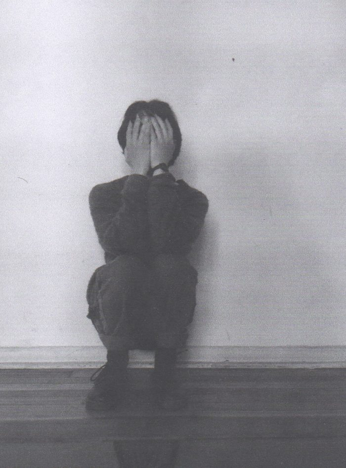
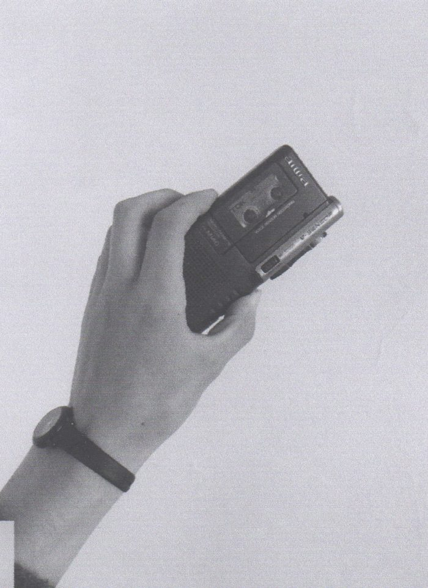
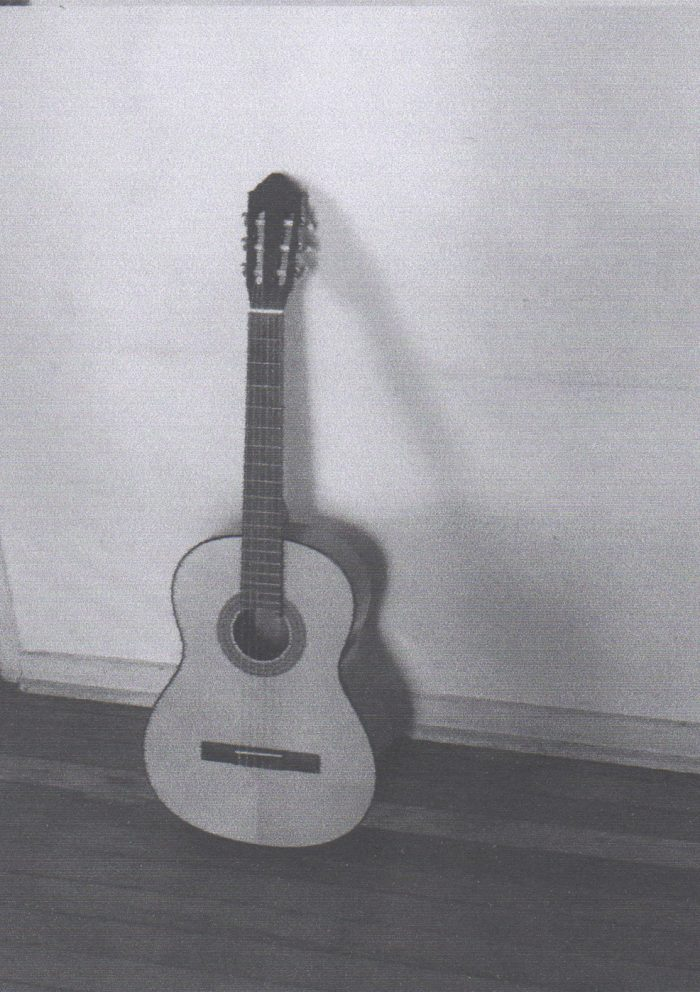

nota/entrevista de martín lagos para la radio comunitaria villa olímpica, publicada el 3 de Septiembre de 2021
Respetable público, tenemos el deber de informarles que ya nos aburrimos de este formato que nos obliga cada semana a inventar una fábula para presentar a gente que hace música con casi todo en contra. Escribiendo como si miráramos desde lejos, tratando de hacer que las cosas quepan en nuestro repertorio de palabras. Esta vez, nos vamos a abrir a las señales que lleguen desde el exterior. Prometemos hacer contacto y solo ser un canal de transmisión, queremos que la realidad supere el poder de nuestra prosa. En realidad, lo necesitamos con urgencia. Y si se aburre el respetable público? No pasa nada. Que vaya al final de la página y escuche la música de Martín Lagos.
Estoy donde quiero estar
Quieres contar tu historia musical. Sí, toma nota. La primera escena es Chillán con la guitarra, una imagen con recuerdos de la música de los casetes maternos. Esta escena se distorsiona rápidamente con ruidos de amplificadores rotos, cintas mal grabadas, bandas de screamo y post hardcore con las que compartí y toqué. Y de fondo siempre la inquietud de registrar, de grabar de la forma que sea, con lo que había a mano. El resultado sonaba terrible pero fue una escuela que enseñó mucho. Y después? Después me trasladé a Santiago y comencé a explorar, concretar, compartir muchos proyectos con varias personas. Ok, me podrías dar nombres de los proyectos en que has estado? Winétt es mi primer proyecto musical, en 2013, tomando el título de un poema de Pablo de Rokha, canciones con guitarra y letra. La verdad nunca he dejado ese proyecto, es el más cercano a mí, el más real, que no tiene un concepto detrás. De paso, te adelanto que pronto saldrá lo nuevo de Winétt, titulado Llámame. Perfecto, algo más? Trabajo también bajo el nombre de Falso Documental, música más electrónica y con un concepto definido, que entiendo como una idea muy pop en comparación a otras cosas que he trabajado. Este proyecto inicia en Santiago en 2017. Inicialmente solo como un experimento que estaba haciendo con un mixer, un teclado y algunas caseteras. Hoy sigo trabajando, con técnicas muy variadas manteniendo el ruido y los elementos más crudos, análogos, junto a una gran variedad de elementos digitales.
Hacer las cosas que quiero con los medios que tengo
La forma en que hago mi música varía constantemente, según la situación y los elementos que tengo a mano. Con el tiempo he superado la frustración de no tener los medios materiales que necesito y me he dado cuenta que la falta de estos medios es lo que le da cierta particularidad a lo que hago. Últimamente he estado entretenido en el ejercicio de equilibrar las canciones que hago desde que las toco en guitarra y luego producirlas en el computador. Siempre he intentado alejarme de la idea purista sobre los géneros musicales, no he querido nunca hacer música específicamente acústica o electrónica o solo análoga, solo digital. De cualquier forma las cosas que uso son guitarra, distintos tipos de micrófono, mi celular para grabar, algunas caseteras y un mixer. He trabajado con Roberto, amigo que vive en Temuco enviándonos canciones por e-mail últimamente, un ejercicio muy divertido. Nunca me he preguntado por qué hago música, siento que estaría matando lo que hago si respondiera a esa pregunta. Así como en cualquier lenguaje artístico: si estás tirando piedras contra una muralla y grabándolo, si estás grafiteando los baños de tu colegio o escribiendo algo que luego vas a cantar con la guitarra… es simplemente expresión. Lo que más me llena y hace sentir seguro con lo que estoy haciendo son las experiencias en conjunto con las demás personas, compartir la emoción de estar haciendo algo. De alguna forma te deja la sensación de ser parte de un algo, “una escena” que tal vez sea solo un estado mental compartido, pero que gratifica y le da sentido a las inquietudes afines.
Aglomeración: un sello en casetes
Actualmente tengo un sello llamado Aglomeración y publico mi música en casetes y la música de amigos, amigas y trabajos que me parecen interesantes. Debo comentarte que el oficio del casete es un mundo que me fascinó desde siempre: diseñar las portadas, ensamblar y grabar casete por casete. Ver la música plasmada en un objeto que requiere una escucha tal vez mucho más íntima de lo que puede ser escuchar en internet o el celular, dependiendo del contexto. El sello se financia con las mismas ventas de los casetes. Por su puesto que con la pandemia y la falta de eventos en vivo no ha salido nada a cuenta y menos porque trato de mantener un precio de venta bajo, pero lo hemos segido haciendo y de a poco se ha podido sustentar.
Lo nuevo: Llámame
“De mi proyecto Winétt tengo un nuevo trabajo titulado Llámame, son canciones y baladas convecionales y muy simples, están inspirado en largas llamadas y conversaciones con amigos y amigas por internet, en la pérdida de personas cercanas, en cosas muy comunes en realidad, borracheras, amor y la amistad finalmente. Hubo un momento en que me estaba frustrando por no poder escribir algunas cosas que quería, como una especie de bloqueo artístico del que se sufre de vez en cuando, y entender la escritura de un modo distinto me ayudó a a completar este proyecto; tomar fragmentos de conversaciones y ubicarlos en medio de alguna letra, o incluso improvisar algunas letras e invitar a otras personas a intervenir el trabajo, ayudo a completar la forma final de Llámame. Lo mismo con la portada del álbum. Me emociona mucho publicarlo por fin y sobre todo que se esté presentando por acá, ha sido una entrevista muy agradable.”
Aló… estás ahí todavía.
Sí, sí, aquí disculpa, te estaba escuchando y hasta dejé de anotar, estaba absorta escuchando… gracias por compartirte, era lo que necesitaba.
Dale, suerte en todo y gracias.
Gracias a ti, Martín.


